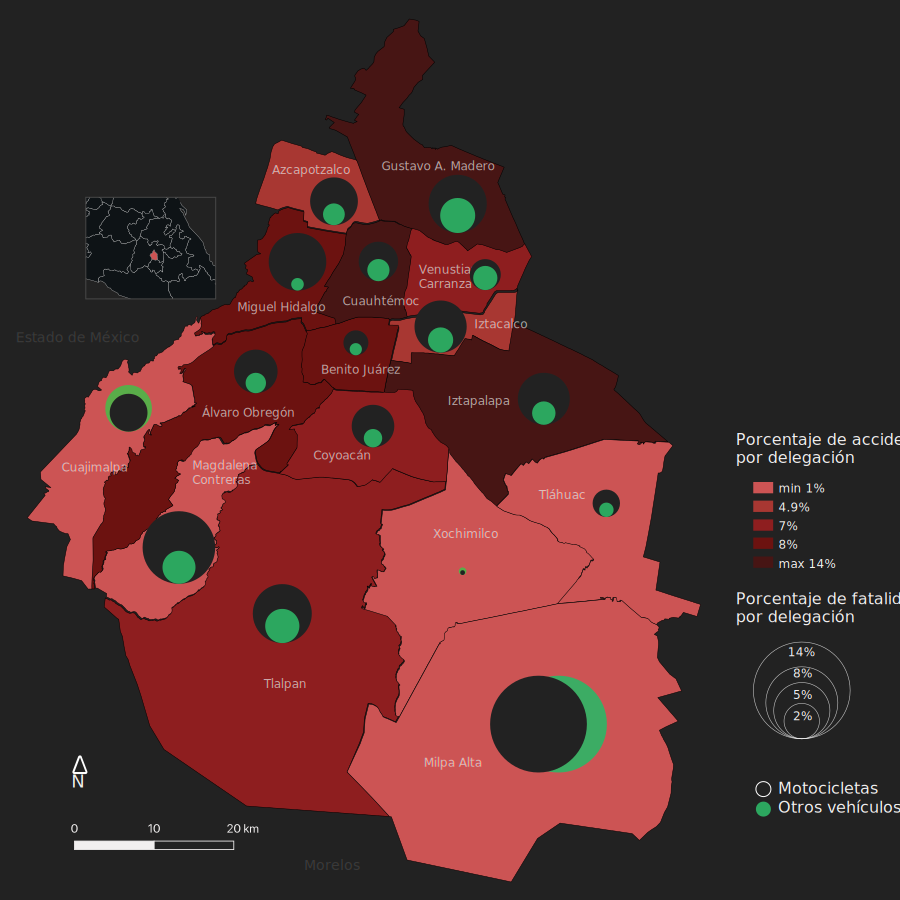

Los accidentes en motocicleta continúan aumentando incluso aún más durante la pandemia de COVID-19 de 2020 a pesar de las restricciones a la movilidad. En esta investigación se analiza el comportamiento de los accidentes fatales en motocicleta en la Ciudad de México durante el periodo de 2018 a 2021.
Este es un estudio sobre el comportamiento de los accidentes fatales en motocicleta antes, durante y después de la pandemia de COVID-19 en 2020.
En este mapa coroplético de la Ciudad de México se muestran las delegaciones con el mayor porcentaje de accidentes de tránsito y los porcentajes de accidentes fatales en motocicleta así como del resto de vehículos que transitan en la vía pública (automóvil, microbús, camion de pasajeros, camioneta, camión, bicicleta, etc.) El porcentaje de las fatalidades en estos vehículos es inferior al registrado en los accidentes en motocicleta.
Mapas comparativos de la densidad de accidentes en motocicleta.

Accidentes en motocicleta durante 2018

Accidentes en motocicleta durante 2018

Accidentes en motocicleta durante 2020

Accidentes en motocicleta durante 2021
Estos mapas muestran la ubicación geográfica de cada uno de los accidentes de tránsito en motocicleta registrados en el periodo de 2018 a 2021. La categorización por día de la semana nos permite observar el comportamiento en fines de semana (incluido viernes) donde los accidentes accidentes ocurren en la periferia de la ciudad.
¿Qué dicen los datos?
Con datos obtenidos de la Secretaría de Mobilidad (SEMOVI) y del Instituto de Geografía y Estadística (INEGI) pudimos hacer las sigueintes observaciones al respecto del comportamiento de los accidentes de tránsito tanto a nivel nacional como a nivel local en la Ciudad de méxico.
Contexto histórico
Número de accidentes de tránsito anuales en México de 1998 a 2021.
Gracias a la Estrategia Nacional de Seguridad Vial para reducir los accidentes de tránsito, en el decenio de 2011 a 2020, México había logrado reducir solamente el 2.16% hasta 2019. Sin embargo, de 2019 a 2020 se redujeron en 16% la cantidad de accidentes de tránsito gracias a las restricciones a la movilidad causadas por la Pandemia de COVID-19 del 2020. Sin embargo, para 2021 los accidentes de tránsito aumentaron 12% ya que las medidas de restricción a la movilidad ya se habían levantado.
Aumento en el número de accidentes en motocicleta en México de 1997 a 2021.
Aunque en otros países los accidentes en motocicleta se han reducido drásticamente, en México son un problema que incrementa junto con la tasa vehicular. (Berrones-Sanz 2016). A pesar de las restricciones que se implementaron durante la Pandemia de 2020, ésta también trajo un fenómeno social en el que muchas personas perdieron sus empleos y al mismo tiempo la demanda de servicios de reparto a domicilio aumentó.
Contexto actual
Número de accidentes fatales en motocicleta en la CDMX de 2018 a 2021.
Se observa que incluso durante las restricciones a la movilidad por la pandemia de COVID-19 en 2020, el número de muertes continuó en aumento. (se muestran cifras totales)
Aumento en las muertes de motociclistas en CDMX de 2018 a 2021.
A consecuencia de lo anterior, muchas personas optaron por autoemplearse en este tipo de actividad haciendo uso de motocicletas como herramienta de trabajo. Lo que explica por qué durante 2020, los accidentes fatales en motocicleta no disminuyeron si no que, por el contrario, se incrementó y la tendencia se mantuvo en 2021 aumentando 61.7% de 2019 a 2021.
Distribución de accidentes y fatalidades por delegación en CDMX de 2018 a 2021
En la gráfica de distribución anterior, se muestran el número de accidentes y muertes por delegación así como el porcentaje de fatalidades. Claramente se observa cuáles son las delegaciones en las que los motociclistas tienen accidentes fatales. El caso de Milpa Alta es un claro ejemplo de que en esa delegación si bien hay un menor número de accidentes y muertos, el porcentaje de accidentes que resultan fatales, es mayor. Habría que investigar más a fondo cuál es el motivo de este comportamiento.
Metodología
Se analizaron las bases de datos de Incidentes de Tránsito de la Secretaría de Movilidad (SEMOVI) y la de Accidentes de tránsito terrestre en zonas urbanas y suburbanas del Instituto Nacional de Estadística y Geografía (INEGI). De estas bases de datos se obtuvo información sobre los accidentes de tránsito en la Ciudad de México (CDMX) desde 2014 al primer cuatrimestre de 2022 y de los accidentes de tránsito registrados en México a nivel nacional desde 1997 hasta 2021 respectivamente. En el análisis de las bases de datos se observó que existe un subregistro de incidentes, ya que los incidentes reportados por SEMOVI e INEGI no concuerdan y hay una gran brecha entre ellos del orden de decenas de miles de registros.
Las variables que se estudiaron en esta investigación fueron: Tipo de accidente (fatal o no fatal), delegación donde ocurrió el accidente y tipo de vehículo. Se excluyeron a los automóviles de la muestra pues, representan la mayor cantidad de vehículos en la vía pública y la relación directa positiva entre parque vehícular y número de accidentes se corelaciona. Así mismo, tienen el porcentaje más bajo en accidentes que resultan fatales. Así mismo, se excluyeron tractores, omnibuses, tranvías y ferrocarriles que tienen el menor número de accidentes y porcentaje de fatalidades, quedando solo con: Bicicleta, camión, camioneta de pasajeros, camioneta, microbús, motocicleta y camión urbano de pasajeros. Siendo las motocicletas el foco central de la investigación.
Se realizó un cuestionario (Luna H.E, Motos 2022, 2022, Google Forms) a once motociclistas que se dedican al reparto de alimentos a través de aplicaciones; se pudo observar que el 72.7% ha sufrido algún tipo de accidente; el 90.9% señala que no hay una cultura de respeto hacia los motociclistas. Sin embargo, solo el 45.5% de ellos ha tomado algún curso de conducción de motocicletas y el 90.9% ha invertido menos de $250.00 USD en equipo de seguridad siendo solo casco y guantes el equipo que utilizan la mayoría de los encuestados. Estos son indicios de la cultura y la falta de preparación por parte de los conductores de motocicletas que influyen de alguna manera a que el número de muertos en accidentes de motocicleta siga sin reducirse y es, tal vez, en donde las políticas públicas deberían centrarse con el fin de reducir las muertes en accidentes de motocicletas.
Conclusión
Se logró comprobar la hipótesis de que los accidentes en motocileta contiinúan en aumento y se incrementaron aún más a raíz de la pandemia de COVID-19 en 2020 en México a causa de los fenómenos sociales que ocurrieron durante ese año como el aumento en la demanda de servicios de reparto a domicilio. Queda responder preguntas importantes como ¿Cuáles fueron las causas de que más personas decidieran comprarse una motocicleta para generar ingreso extra?, ¿Cuál fue el aumento en el parque vehicular de motocicletas durante 2020 y 2021?, ¿Cuál es la cultura del mexicanno al respecto de la seguridad en motocicleta?
Referencias y bibliografía
- Casuística de accidentes de motocicleta y lesiones en los alumnos de la Escuela de Tráfico de la Guardia Civil
- Análisis de los accidentes y las lesiones de los motociclistas en México
- Traumas por accidente de vehícuolos livianos tratados en la emergencia del hospital Durán
- Trauma craneoencefálico por accidente en motocicleta, PASTO 2003-2007
- Informe sobre la situación de la seguridad vial en México 2020
- Ley general de movilidad y seguridad vial
- Prevención de accidentes en motocicleta. Plan de comunicación para fomentar la cultura vial en los jóvenes de San Lorenzo Tezonco
- Fracturas abiertas de miembro inferior por accidentes de motocicleta
- Estadísticas a propósito del día mundial en recuerdo de las víctimas de los accidentes de tráfico
- Cascos. Manual de seguridad vial para decisores y profesionales
- El estado de las lesiones causadas por el tránsito en México: evidencias para fortalecer la estrategia mexicana de seguridad vial